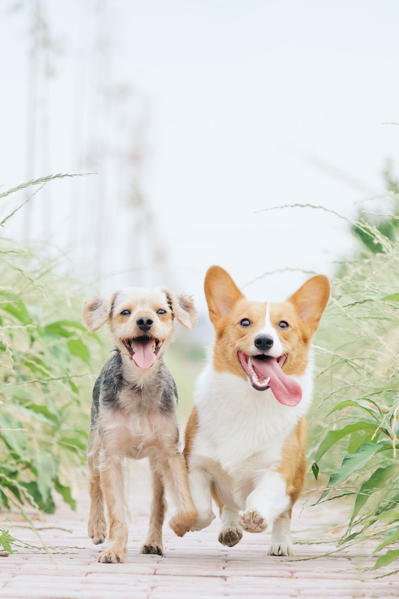
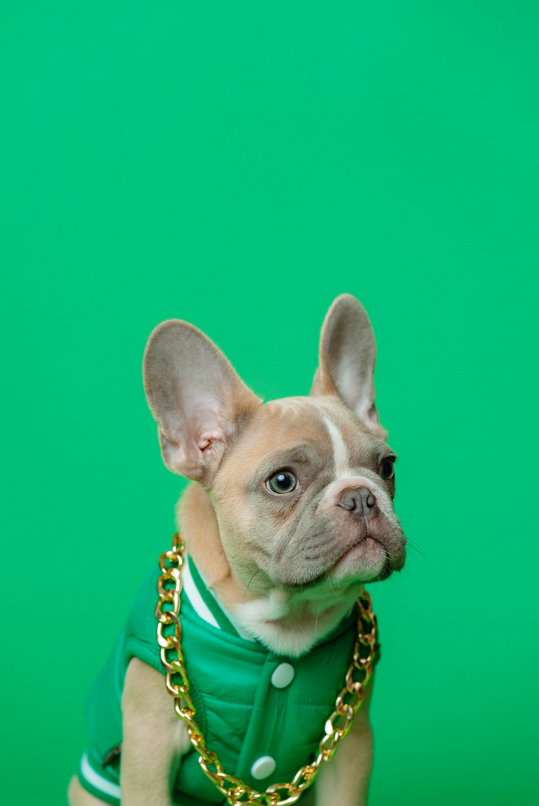
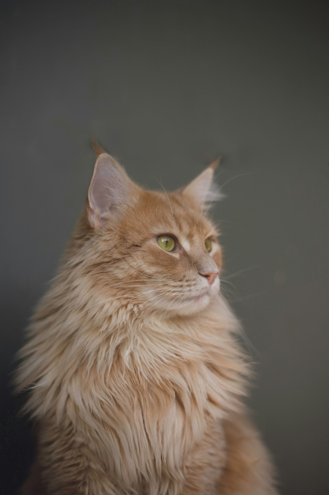

Consulta, vacunas y tratamientos para tu mascota en Jardines de San Agustín, Chimalhuacán. Abierto todos los días.
📞 Llamar 55 1612 7250💬 WhatsAppRevisión completa y diagnóstico.
Esquemas para cachorros, gatitos y adultos.
Interna y externa, con calendario.
Croquetas y snacks para perro y gato.
Análisis clínicos y estudios.
Baño y corte para perros y gatos.
En Chimalhua-Can atendemos a perros y gatos de la colonia con consulta, tratamientos, vacunas y desparasitación, además de alimento para mascotas. Trato cercano y precios justos.



★★★★★“Muy buena atención, el doctor revisó a mi perro con mucha paciencia.”
— Cliente
★★★★★“Precios accesibles y trato amable. Vacunaron a mis gatos sin problema.”
— Clienta
★★★★★“Me quedan cerca y siempre resuelven. Recomendados en la colonia.”
— Cliente
Lunes a sábado de 10:00 a 19:00 y domingo de 11:00 a 15:00.
En Av. Saltillo esquina con Clavel, colonia Jardines de San Agustín.
Sí, atendemos perros y gatos con el mismo cuidado.
En general cada 3 meses en adultos; te damos un calendario según la edad de tu mascota.
Sí, contamos con croquetas y snacks para perro y gato.
📍 Av. Saltillo s/n esq. Clavel, Jardines de San Agustín, 56343 Chimalhuacán, Méx.
📞 55 1612 7250
🕙 L-S 10:00–19:00 · D 11:00–15:00